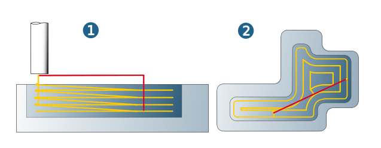
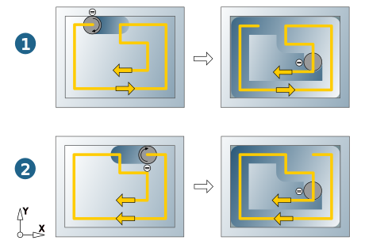

Macros
Macros define the edge behavior of the tool during the machining.
Plunge macro in High Performance Roughing
The Spindle RPM and Dwell time parameters control the tool behavior for the plunge macro. Spindle speed changes take place during the dwell time before and after the plunge macro.
Note
Please ensure that your machine and postprocessor support this parameter.
Machining closed pockets
To machine closed pockets, the Ramp plunge macro generates, in combination with the Optimized in infeed mode, a continuous ramping-in movement without reversing direction (1). Upon reaching the infeed depth, the material is removed from the outside inwards (2). The machining strategy remains unchanged if there is free access from outside.
|  |
If plunge points are defined, the macro is executed as a zigzag movement.
Plunge ramp direction
When using the Optimized in machining strategy, you can define, in conjunction with the Ramp plunge macro, whether the tool moves with climb milling to the model side (1) during the first cut, (Climb milling > Model) or with climb milling to the stock side (2) (Climb milling > Stock).
|  |